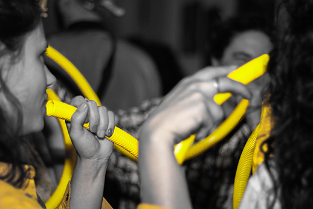

Quem Somos?
Casarelas é uma coletiva e articuladora de con-vivências multi-artísticas itinerantes, que realiza residências, ocupações e mostras protagonizadas por mulheres desde 2018.
Norteadas pelo poder do Círculo, dos encontros em roda, carregamos o lema "mais roda, menos palco". Buscamos contagiar todos com a coragem de expressar livremente acreditando que "todo ser guarda uma performance dentro".
A coletiva surgiu em 2018, no município de Nova Lima, região metropolitana de Belo Horizonte e hoje é um movimento que tem participantes de diferentes estados do país, e reúne artistas de diferentes áreas, como cinema, artes visuais, performance, música, escrita, dança, dentre outras.